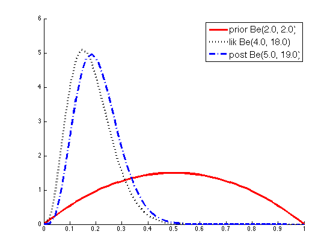
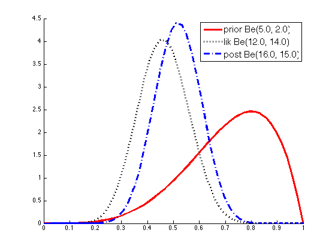

Example of parameter updating in a Beta-Binomial model
Contents
data(1).a = 2; data(2).a = 5;
data(1).b = 2; data(2).b = 2;
data(1).N1 = 3; data(2).N1 = 11;
data(1).N0 = 17; data(2).N0 = 13;
flatPrior.a = 1;
flatPrior.b = 1;
figname = {'betaPost', 'betaDemoPost'};
legendstr = cell(1,3);
x = linspace(0.001, 0.999, 50);
for i = 1:numel(data)
Update
prior.a = data(i).a;
prior.b = data(i).b;
N = data(i).N0 + data(i).N1;
nsucc = data(i).N1;
nfail = N-data(i).N1;
post.a = prior.a + nsucc;
post.b = prior.b + nfail;
lik.a = flatPrior.a + nsucc;
lik.b = flatPrior.b + nfail;
Plot
figure; hold on
Pprior = exp(betaLogprob(prior, x));
name = sprintf('prior Be(%2.1f, %2.1f)', prior.a, prior.b);
plot(x, Pprior, 'r-', 'linewidth', 3, 'DisplayName', name);
Plik = exp(betaLogprob(lik, x));
name = sprintf('lik Be(%2.1f, %2.1f)', lik.a, lik.b);
plot(x, Plik, 'k:', 'linewidth', 3, 'DisplayName', name);
Ppost = exp(betaLogprob(post, x));
name = sprintf('post Be(%2.1f, %2.1f)', post.a, post.b);
plot(x, Ppost, 'b-.', 'linewidth', 3, 'DisplayName', name);
h=legend('Location', 'NorthEast');
set(h, 'fontsize', 15);
printPmtkFigure(figname{i});
 
end